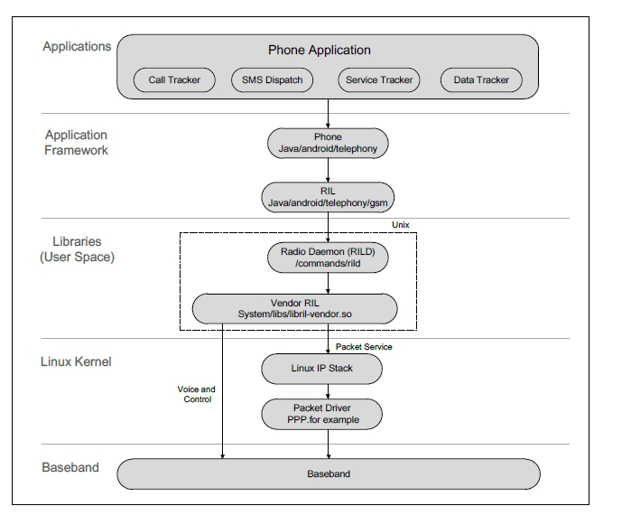

RIL
What should we do
Make sure that Android support Telephony and RIL framework.
Make sure the ril-daemon is running.
Make sure the RILJ connected.
What is the RIL

Telephony Framework
On the Android device, make sure that you can see the following files.
/vendor/bin/hw/rild
/vendor/lib/libril.so
/system/priv-app/TeleService/TeleService.apk
/system/priv-app/TelephonyProvider/TelephonyProvider.apk
/system/framework/telephony-common.jar
If you cannot see them please add them in the Android source code.
PRODUCT_PACKAGES += \
Telecom \
TelephonyProvider \
telephony-common \
rild
ril-daemon
Service ril-daemon1) can be configured by adding the following lines to init*.rc or *rild.rc. The relevant lines vary depending on the accessing interface and the Android version being used.
The location of init*.rc varies according to your project settings. The following gives a non-exhaustive list of file paths which may contain the init*.rc file.
device/fsl/imx6dq/sabresd_6dq/init.rc
device/ti/am335xevm_sk/init.am335xevm.rc
device/rockchip/rk3399/init.rk3399.rc
device/samsung/smdkv210/init.smdkv210_sdmmc.rc
rild.rc is only available for Android 7.x or later versions.
The name of RILD service might also be vendor.ril-daemon. In this document, we will only use service ril-daemon for illustration.
For modules accessed via USB/PCIe interface, add the following lines to init*.rc or *rild.rc.
For Android 4.x–7.x
service ril-daemon /system/bin/rild -l
class main socket rild stream 660 root radio socket rild-debug stream 660 radio system user root group radio cache inet misc audio sdcard_rw log For Android 8.x and later version
service ril-daemon /vendor/bin/hw/rild -l
class main user root group radio cache inet misc audio sdcard_rw log B capabilities BLOCK_SUSPEND NET_ADMIN NET_RAW
Make sure that getprop | grep ril ps -efl | grep ril You can see that rild is running.
RILJ
FAQ
rild is restarting
librilutils.so not found
CANNOT LINK EXECUTABLE “/vendor/bin/hw/rild”: library “librilutils.so” not found: needed by /vendor/lib64/libril.so in namespace (default)
mmm hardware/ril/librilutils PRODUCT_PACKAGES += librilutils.vendor
android.hardware.radio.config-v2-ndk.so not found
CANNOT LINK EXECUTABLE “/vendor/bin/hw/rild”: library “android.hardware.radio.config-v2-ndk.so” not found: needed by /vendor/lib64/libril.so
mmm hardware/interfaces/radio/aidl PRODUCT_PACKAGES += android.hardware.radio.config-v2-ndk.vendor